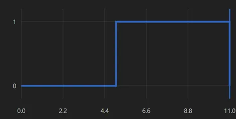

README.md
What it is, why it’s hard, and how it’s wired.
## overview
Quest2Skill is a cross-embodiment teleoperation and data-generation pipeline. It captures human manipulation trajectories using a Meta Quest headset and controllers.
The recorded motion is retargeted to simulated robot manipulators, and the system generates synchronized demonstrations for robot-learning workflows.
## problem
- Human demonstrations are difficult to transfer directly across different robot embodiments.
- Controller motion must be converted into valid robot end-effector and joint trajectories.
- Gripper commands, robot states, and camera observations must remain synchronized.
- Collecting large robotic datasets in the real world is expensive and time-consuming.
## implementation notes
- Quest headset, controller, and trigger data streamed over TCP.
- TCP packets converted into ROS 2 topics.
- Controller pose retargeted into robot end-effector targets.
- Lula IK and RMPflow generate Franka joint commands.
- Trigger input mapped to the gripper state.
- Multi-view observations, joint states, actions, and gripper signals recorded as synchronized demonstrations.
## stack & source
From headset to dataset
A custom toolkit that can be added to any environment to manipulate objects, with Isaac Sim as the digital twin.


↓ retargeted human end-effector positions over time → robot joint states via the IK solver

Implementation architecture
Five stages, each with a single job, joined by timestamped messages.
Quest App
Headset pose, controller pose, trigger input
ROS 2 Bridge
Packet parsing; synchronized, timestamped topics and services exposed through ROS
Isaac Sim
Controller proxy, frame transforms and scene interaction
Franka Panda
Lula IK → RMPflow → joint commands
Dataset Recorder
Synchronized camera views, joint states, actions and gripper states